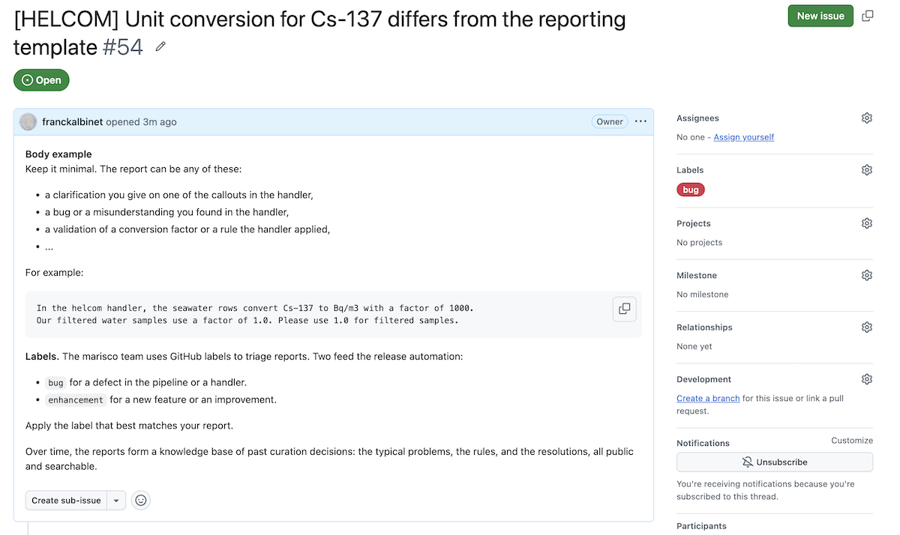

Contributing data to MARIS
This page explains how to contribute a dataset to MARIS, the IAEA’s open-access marine radioactivity repository. It is written for data providers: laboratories, monitoring programmes, and researchers who hold marine radioactivity measurements and want them to reach the scientific community.
Contributing is a conversation, not a form. You deliver your data in whatever format you have. MARISCO curates it into the MARIS standard. Where your data does not fit the standard, you are asked to decide, not silently corrected.
Why contribute to MARIS
MARIS is the international reference for marine radioactivity data. It is used by researchers, by monitoring programmes, and by the IAEA itself to assess the state of the marine environment.
When your data is in MARIS, it is comparable with data from every other provider. A measurement of Cs-137 in seawater from your laboratory sits next to measurements from laboratories worldwide, expressed in the same units, described with the same nomenclature. That comparability is the value of the repository. It turns isolated measurements into a global picture.
Your dataset also becomes citable. Each dataset in MARIS carries its bibliographic reference, so the work behind the data is credited and traceable.
What MARISCO does with your data
MARIS does not impose a data schema on providers. You deliver your data in whatever format it arrives in: an Excel sheet, a CSV export, a research paper’s supplementary material. MARISCO reads it as delivered.
The curation is done by a handler, a notebook that documents every decision. Unit conversions, nuclide name mapping, coordinate standardisation, outlier flags: each choice is a line of code with an explanation next to it. Nothing is silently changed.
Where your data does not fit the MARIS standard, the friction is surfaced, not hidden. The handler flags the mismatch and asks you to resolve it. You stay in control of your data’s interpretation.
The result is a self-contained NetCDF file that bundles your measurements, the variable metadata, the nomenclatures used, and the bibliographic attributes. This file feeds the MARIS web interface, the data API, and the CSV export used for database import.
What makes a dataset easier to ingest
A dataset is easier for MARIS to ingest when each row represents one measurement and each column represents one variable. In this layout, the sample, nuclide, value, unit, and uncertainty are stored in separate fields. This is often called tidy or long-format data.
Many providers instead place a sample and all its associated measurements on one row. This wide format can be convenient for reporting and is a valid way to organise source data. It requires an extra transformation during ingestion, since the handler must turn measurement columns into rows and recover information such as the nuclide and unit from the column names.
MARIS uses the long format internally because it gives each measurement the same structure. Providing data in this format reduces provider-specific parsing and makes the ingestion process more direct. Hadley Wickham describes the principles behind this format in “Tidy Data”, Journal of Statistical Software, 2014.
The GEOTRACES intermediate data product provides a practical example. It uses a wide CSV in which measurement columns such as Cs_137, Pb_210, and Pu_239_Pu_240 encode the nuclide, while names such as U_236_D and U_236_T also encode the phase. The GEOTRACES handler converts these columns into measurement rows and parses the encoded metadata. The resulting data is fully usable, but the additional reshape and parsing make ingestion more laborious than it would be with one row per measurement.
The reporting template
MARIS provides a reporting template that describes, for each sample type, the columns we would like to receive. The template is a recommendation, not a requirement. Providers may deliver data in their own format, but a layout with one row per measurement usually needs less curation.
The template is documented as a reference page, reporting template, with the full column tables and lookup lists for body parts, sediment types, and methods. Providers who want a fill-in sheet can build one from those tables.
MARIS data model and formats
MARIS distributes data through a data model in two forms. The primary form is the NetCDF4 file, whose variables are defined in the field definitions. The second is the CSV export, whose columns mirror the master database schema, documented in the database schema.
These are reference material, not requirements on your delivery. You do not need to read them to contribute. They are there when you want to know what a column means or where a value ends up.
The review loop
Contributing is a conversation. As MARISCO curates your dataset, the handler may surface a callout: a highlighted box in the handler page that signals an inconsistency, an error, a request for validation or clarification, or a suggestion for removing a friction. Each callout is written for you, the data provider, and asks for your input.
An example is visible in the helcom handler page.
You can respond in two ways. You can raise a GitHub issue on the marisco repository to comment on the callout or ask a question. Or you can arrange a meeting or a call with the MARIS team to discuss it directly. Whatever the route, your answer feeds into the next run of the handler, and the dataset moves closer to its final form.
Responding: on GitHub
The callout tells you what is needed. You then respond, and your answer feeds into the next run of the handler. There are two ways to respond, and the GitHub report is one of them.
When you raise a GitHub report on the marisco repository, follow the conventions below so it is easy to triage and to include in the release notes.
GitHub provides a full guide to working with reports: Mastering Issues.
The marisco repository keeps an open example report that serves as a template. Use it as a starting point: HELCOM unit conversion report.

Title. Start the title with the handler name in brackets, then the topic. For example [HELCOM] Unit conversion for Cs-137 differs from the reporting template.
Body. Keep it minimal. The report can be any of these:
- a clarification you give on one of the callouts in the handler,
- a bug or a misunderstanding you found in the handler,
- a validation of a conversion factor or a rule the handler applied.
For example:
In the helcom handler, the seawater rows convert Cs-137 to Bq/m3 with a factor of 1000.
Our filtered water samples use a factor of 1.0. Please use 1.0 for filtered samples.Labels. The marisco team uses GitHub labels to triage reports. Two feed the release automation:
bugfor a defect in the pipeline or a handler.enhancementfor a new feature or an improvement.
Apply the label that best matches your report.
Over time, the reports form a knowledge base of past curation decisions: the typical problems, the rules, and the resolutions, all public and searchable.
Going further
If you want to see how the curation works from the inside, or you have a dataset that is not yet supported, the writing a handler page walks through adding a new data provider to the pipeline. It is written for developers with Python and nbdev experience. Longer term, the MARIS team plans to run workshops for providers who want to develop their own handlers.